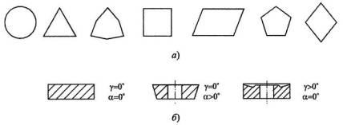

Использование пайки стандартных пластин из твердого сплава, имеющих разнообразную форму,
позволяет получать компактные конструкции резцов. Однако пайке присущ такой существенный
недостаток, как появление внутренних термических напряжений в спае и в самих пластинах из-за
большой разницы (примерно в 2 раза) коэффициентов линейного расширения твердого сплава и
стальной державки. При охлаждении после пайки возникающие напряжения приводят к образованию
микротрещин в пластинах, которые вскрываются при заточке или в процессе резания. Микротрещины
приводят к выкрашиванию и даже к поломкам пластин. Обычно применяемые технологические приемы
по снятию напряжений: релаксация путем замедления скорости охлаждения, использование
компенсационных прокладок и другие – не решают полностью этой проблемы. Избавиться от
напряжений можно только путем применения сменных многогранных пластин (СМП), которые
механически крепятся к корпусу инструмента. По мере затупления пластин путем их поворота
производится обновление режущих кромок, что обеспечивает их быстросменность и не требует
переточек.
По числу режущих кромок и форм пластины имеют различные исполнения, закрепленные в международных и национальных стандартах. Некоторые из них приведены на рисунке ниже (а).
Геометрические параметры инструментов, оснащенных СМП, определяют в статике при изготовлении пластин и корректируют при их закреплении в корпусе (державке) инструмента с учетом кинематики станка и условий резания.
По геометрическим параметрам СМП делятся на: а) негативные (γ = 0°, α = 0°); б) позитивные (γ = 0°, α > 0°); в) негативно-позитивные (γ > 0°, α = 0°).
Задний угол при установке негативных и негативно-позитивных пластин создается за счет их поворота при креплении в державке резца. При этом у негативных пластин передние углы становятся отрицательными, т.е. (–γ) = α, у негативно-позитивных пластин угол γ уменьшается на величину угла α. У позитивных пластин угол γ равен углу поворота пластины по часовой стрелке, а угол α уменьшается на эту же величину.
Пластины негативные и негативно-позитивные крепятся чаще всего прихватом сверху (схема а) или по схеме г. Последняя обеспечивает более надежное крепление. Крепление винтом (схема в) используется для малонагруженных пластин и является простым и компактным.
У резцов наибольшее распространение получили пластины с отверстием. Благодаря этому обеспечиваются свободный сход стружки по передней поверхности и значительно меньшие габариты элементов крепления, размещаемых в корпусе державки.
Возможны нестандартные схемы крепления твердосплавных пластин нестандартной формы. Примером этому являются отрезные резцы (схема д), разработанные фирмой «Sandvik Coromant» (Швеция). Здесь крепление пластины осуществляется силами упругой деформации стенки паза державки.